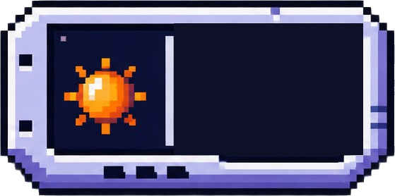

DÍA
00
0
CARTAS
0 / 10
▾
Cartas
Informes
Datos NASA
Lo aprendido
Cerrar ✕
herramientas del equipo
Uso
Libre
Salón
grado
1°
2°
3°
4°
5°
6°
Modo
Tú juegas
Automático
Velocidad
1×
2×
4×
Habilidad
70%
Comprensión
65%
Voz en off (lectura 1)
Nueva partida
Menú
Borrar progreso
Finales
3★
2★
1★
apagón
despensa
radiación
agotado
Solo el equipo lo ve:
—
Datos:
—